Audience Activation

Overview
I designed a unified audience activation flow for Twilio Segment, so users could send an audience to downstream tools like Braze in one guided setup, for both classic audiences and the new linked audiences.
Linked audiences launched with the new pattern. After a reduction in force in March 2024, classic audiences got a scaled-back version instead, and the full design is validated and ready for when it becomes a priority again.
My team
1 PM, 1 PD, 2 ENG
Oct 2023 – Mar 2024
Context
Segment is a customer data platform (CDP) that helps businesses collect, unify and activate their data to power personalized experiences. An audience is a group of profiles that share certain behaviors or traits. After building an audience in Segment, users sync it to their connected destinations. The most popular ones are multi-channel marketing apps.
Segment launched a new generation of destinations ("Action destinations"), but we never updated the audience activation UX. The gap showed up in support tickets and in sales.
The problem
- ~20% of audience support tickets were related to confusion with activation.
- 42 product gaps filed were related to audience activation, with $34M in associated ARR.
- Segment was building a new type of audience ("linked audience") that needed to activate with Action destinations too.
Design a unified audience activation pattern that works for both classic and linked audiences.
Timeline and my role
I was the sole product designer, working closely with the designer on the Linked audience team.
Design
- Created user flows and wireframes
- Built prototypes for research
- Delivered high-fidelity mockups
- Aligned across teams
User research
- Audited the current UX
- Ran concept testing
- Ran usability testing
Development
- Delivered pixel-perfect, implementable designs
- Worked through edge cases with engineers
The current experience
Activating an audience took five steps across two parts of the app.
- Add destination to the space
- Build an audience
- Add destination to the audience
- Turn on "Send Track" and/or "Send Identify"
- Enrich payload with traits (optional)
- Configure mappings in Connections
- Select an Action
- Define event trigger
- Map properties
- Send test event (optional)
Done, or not done?
Most customers turned on their audience in Engage settings and thought they were done. They didn't know the rest of the activation setup lived on a different page. The disjointed UI didn't match users' expectations and contributed to ~20% of audience-related support tickets.


Linked vs. classic audiences
To design one pattern for both audience types, I mapped where they differ. The steps were the same: event triggers, enrichment and field mapping. The real difference was in the backend.
| Linked audience | Classic audience | |
|---|---|---|
| Backend architecture | 1:1 relationship between a linked audience and a mapping | Many:1 relationship between classic audiences and a mapping |
| Event triggers | Audience entered and exited, entity added and removed | Audience entered and exited |
| Enrichment | Profile traits, plus entity data from the warehouse | Profile traits only |
| Field mapping | Required. Some destinations have presets that skip mapping. | Required |
Target users
Technical marketers who build audiences in Segment and want to activate them in downstream tools for personalized campaigns.
North star metric
Reduce time to value, from adding a destination to an audience to audience data flowing, by 25%. The median time was ~70 hours across all destinations.
Design concept and testing
My concept was a full-page wizard that guides users through each step of activating their audience in one place. We presented the mocks to a few solutions engineers and the Segment marketing team.
The wizard format was well received by all participants. They felt the new design gave them a more streamlined and intuitive setup, and the steps of enriching the event, selecting an Action and configuring the mapping matched their workflow.
"Creating the mapping in Salesforce mapping settings is a pain. I have to go to mapping settings and configure the event type as identify, the audience key, etc. This flow replaces that, right? The fact that it's inherited is great."
— Principal advisory architect, Twilio
"I think it's straightforward and makes a lot of sense from my side. The redundancy comes in when we have to do the same things a bunch of times. I love it."
— Customer success product technical lead, Twilio
Enrichment and mapping: one step or two?


Most participants preferred option 2. Configuring enrichment and mapping usually takes some back and forth, and they wanted to come back and edit both in one place.
Track or Identify?
Participants struggled to choose between a Track and an Identify call on the first step. They didn't understand the difference, or what it meant for the downstream tools.

The Action already knows
Users relied on the name and description of the Action to decide between Track and Identify, because that terminology (for example, "Update user profile" for Braze) matches the terminology in the destination tool. After some digging, we found that most Actions are built with a default trigger that already defines the call type.


Design iteration
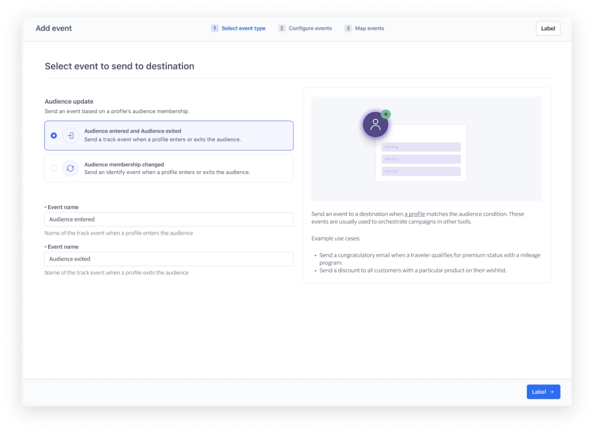
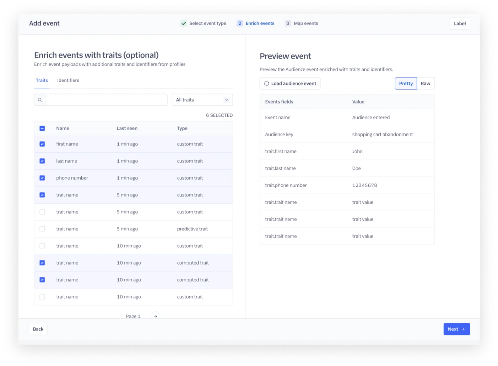
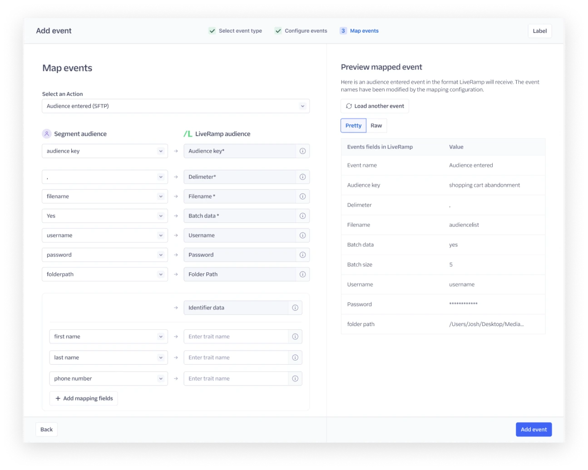
Before: select event type, enrich, then map.
What changed
- Removed the Track or Identify call selection as the first step.
- Used the default trigger of the Action to infer a Track or Identify call.
- Put event enrichment and mapping on the same page.
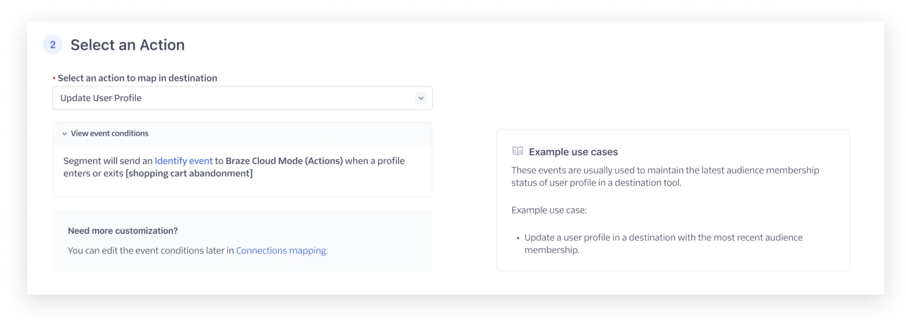

Usability testing
Given the major changes to the flow, we ran usability tests with 5 more external customers.
- The activation flow was intuitive and easy to follow. Pre-filling the event trigger and call type based on the selected Action matched users' workflow.
- Previewing events wasn't enough. Sending a test event was a must-have, ideally with the ability to edit the user ID.
- Technical users loved seeing the raw payload.
The surprise: who actually activates audiences
We had always assumed Engage was a product for marketers. The interviews showed something different. Audience activation was too technical for most marketers to set up. They usually built the audience and handed it off to a data engineer for activation. Sometimes data engineers set up the first audience-to-destination configuration, and marketers copied and reused it.
The debate: should we build for data engineers, or enable marketers to self-serve?
Marketers are the experts in the downstream tools. Their technical level also varies with the tools they use. Some destinations, like Salesforce Marketing Cloud, need more technical knowledge.
The lack of role-based access control (RBAC) in Segment was a further barrier to marketer self-service.
Now
Meet customers where they are in the product. Because of the technical nature of the flow, design for data engineers and technical marketers.
Long term
Marketers want less dependency on their data team, and the product isn't there yet. We need more foundational research on the marketer persona, RBAC requirements and the gaps in marketer self-service.
Design changes


Cross-team review
Two teams raised feedback in review:
- The Linked audience engineering team wanted the UX for linked and classic audiences unified further. Reusing UI components would greatly reduce engineering time.
- The Audience compute engineering team was concerned about removing the "connect destination" step from the audience creation flow.
One pattern, two audience types
I worked closely with the Linked audience designer on an end-to-end teardown of features and UI components across linked and classic audiences. We weighed bespoke UI against unified components, made the decisions together, and documented where the two products align and differ.


Action first, then enrich
We switched the order of selecting an Action and enriching the event, since that order is a hard requirement for linked audiences.
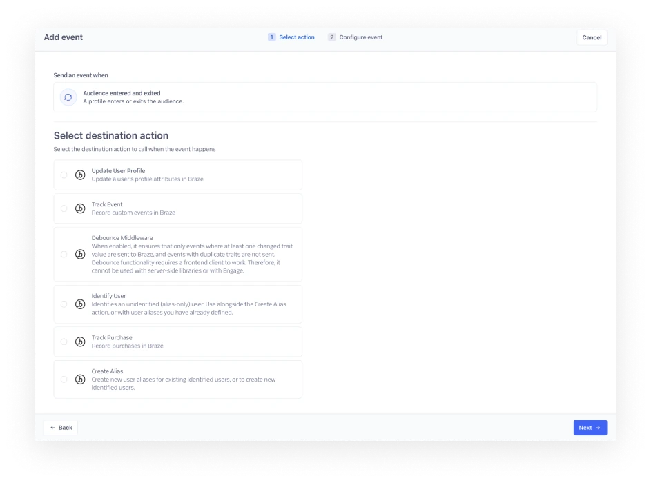
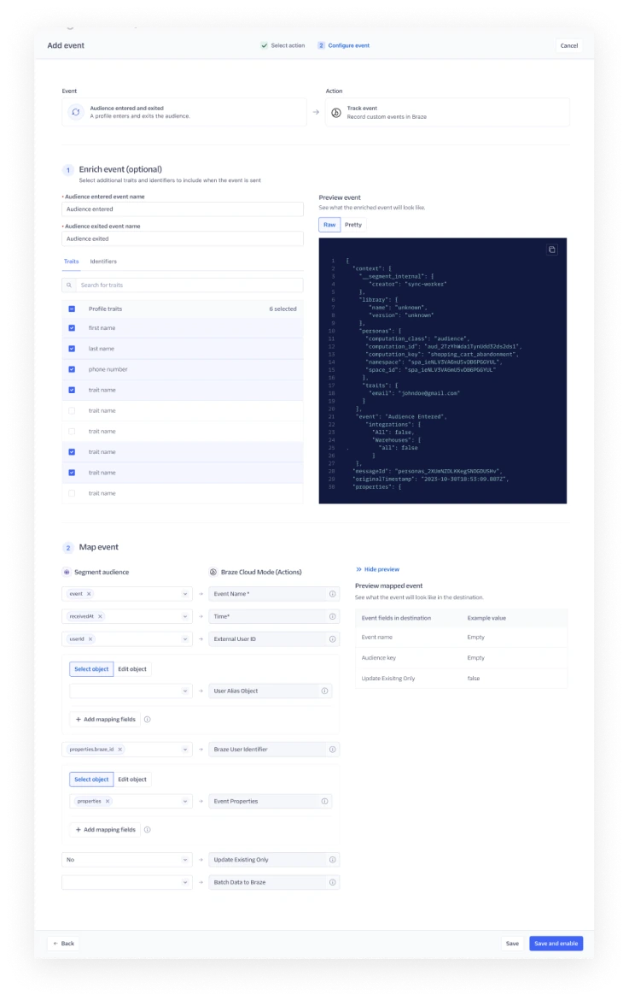
Removing the "connect destination" step
I proposed removing the "connect destination" step from the audience creation flow. Audience activation now had its own flow, so keeping the step was redundant and gave users the false impression that their task was complete. The Audience compute team was concerned that, with the current logic, this would increase the cost of computing audiences.
I found out the reasoning behind the concern, brainstormed with engineers on ways to mitigate the risk, and proposed a few options for the team's input.
The team unanimously agreed with the proposal. The result was a unified, streamlined UX with a small backend change to the compute logic and no added risk. The engineering task was committed to the Audience compute team's Q1 backlog.


Design walkthrough
Connect a destination
Activation starts from the audience. Until a destination is added, the audience makes clear it won't sync.
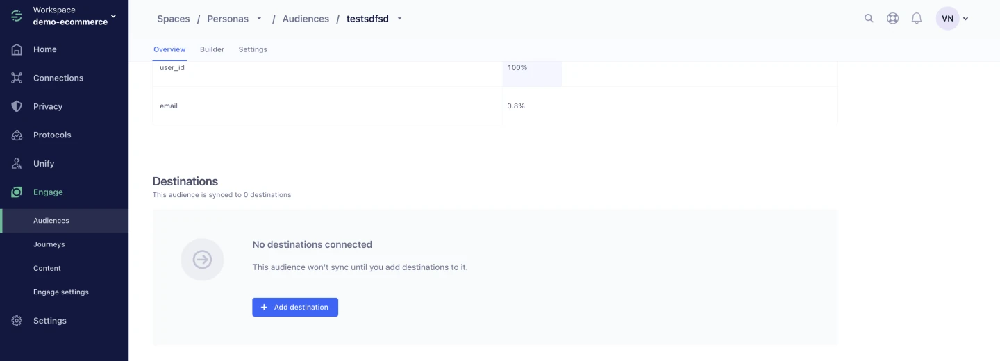
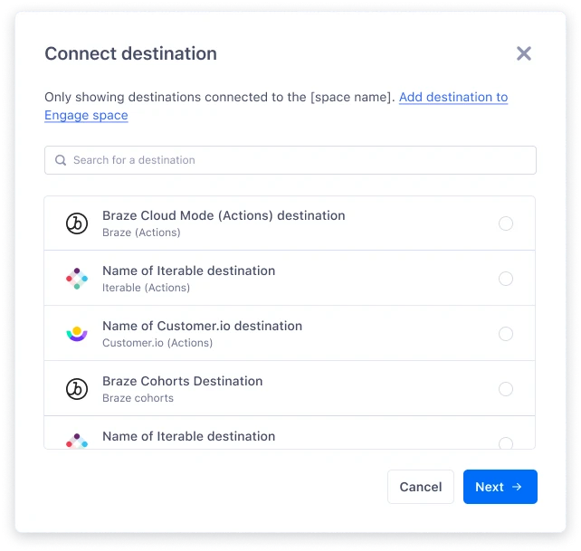
Select an Action
Users pick the Action in the destination's own terms. The call type comes from the Action's default trigger, and users only choose between Track and Identify when an Action doesn't define one.
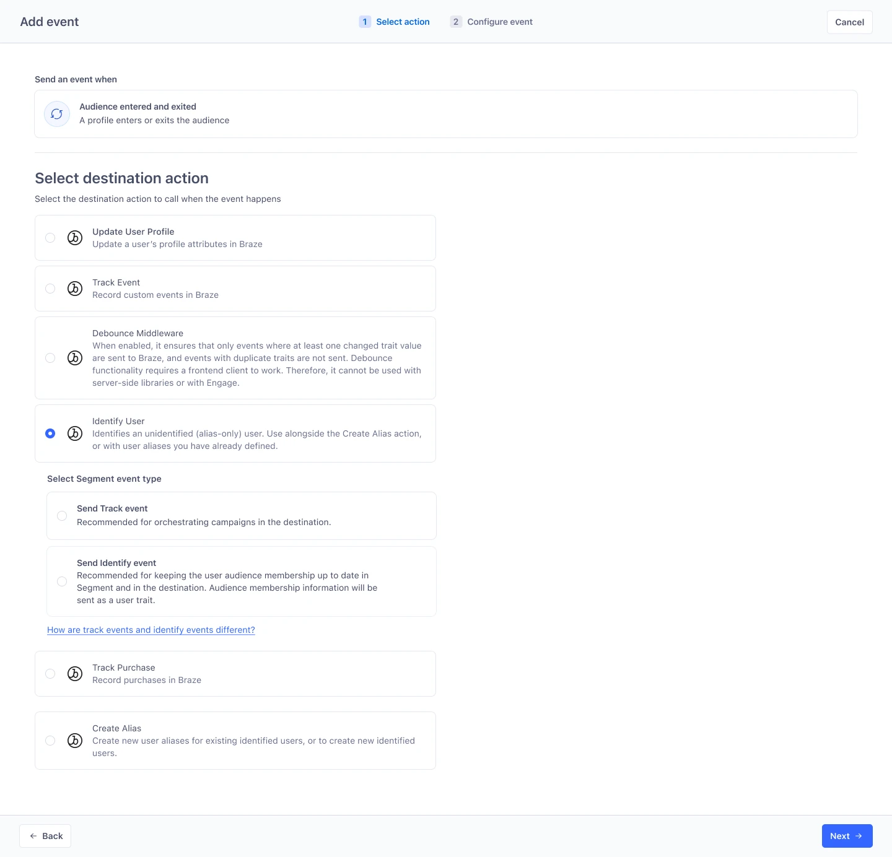
Configure the event
Enrichment and mapping live on one page, with a raw payload preview and a test event sent to the destination before saving.
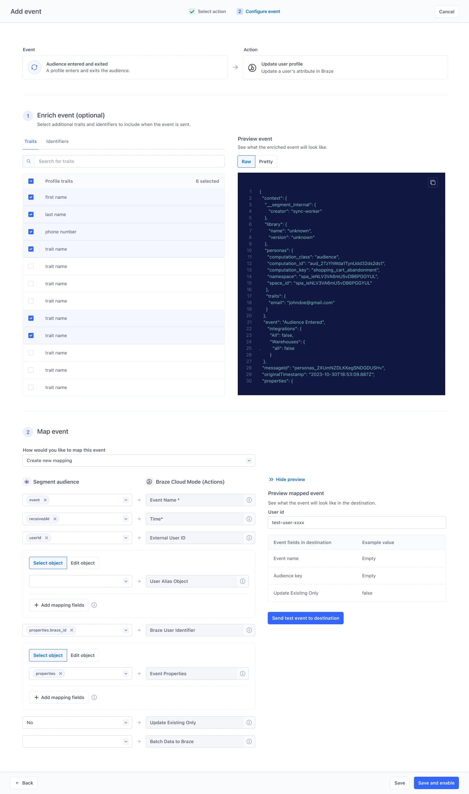
Back on the audience
The new event shows up on the destination, and the audience shows what it syncs to.
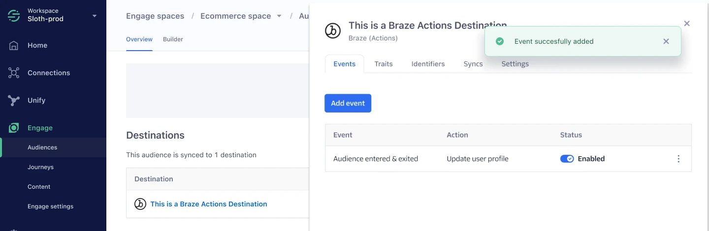
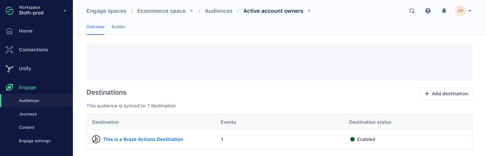
Pivot after the reduction in force
Linked audiences launched with the new, unified UX pattern. But Segment had new priorities for 2024, and optimizing classic audiences wasn't one of them. Our engineering team was affected by the reduction in force in March, with 50% of the work still left.
How might we still deliver customer value with a smaller team?
A quick win
The goal was a low-risk UX improvement scoped to 2 engineering weeks.
- Added a Mappings tab to the audience's destination side sheet that points users to configure mappings in Connections.
- Cleaned up the audience settings side sheet with a clearer information architecture.
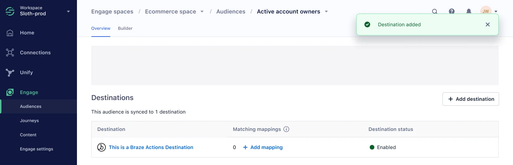
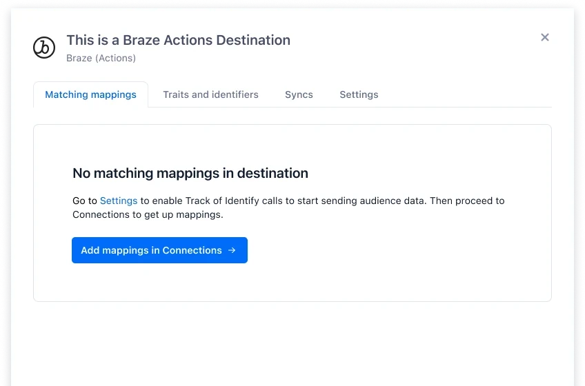
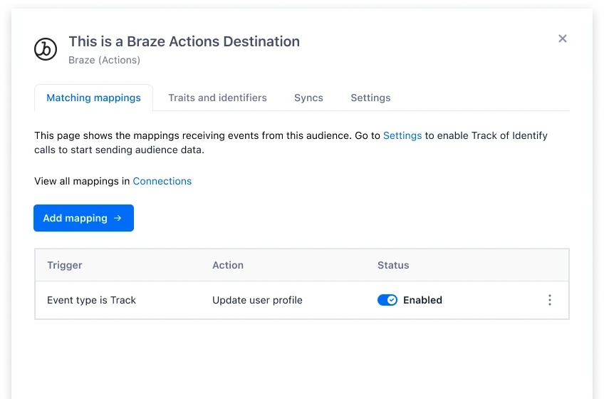
Result and impact
- Linked audiences launched with the new unified UX. All 18 beta customers onboarded successfully after the March launch and gave positive feedback.
- The scaled-back solution for classic audiences got a positive reaction from all cross-functional stakeholders. The change is small, but it's a step in the right direction.
- The full design is validated and ready whenever classic audiences become a company priority again.
- We monitored the time-to-value metric but didn't see a statistically significant improvement.
Learnings and reflections
Foundational persona research matters
Segment lacked foundational research on the target persona, and for most of the project we worked under the wrong assumption. We course-corrected quickly, but valuable time was lost.
Partnering with a team whose goals conflict
Working with the Linked audience team came with a lot of friction, because the two teams had different goals: faster time to market with a pilot product, versus migrating existing customers without introducing regressions. If I did this again, I would engage the Linked audience team at a later phase, once their focus had shifted to feature parity with classic audiences.